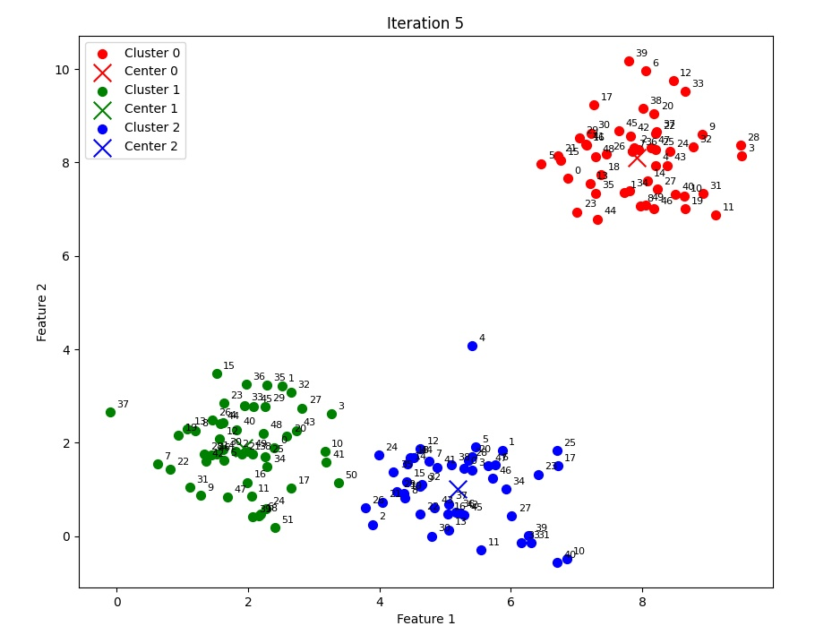

Algorithm Overview
COP-KMeans (Constrained K-Means) is an extension of the traditional K-means clustering algorithm that incorporates user-defined constraints to improve clustering quality. Unlike standard K-means, it considers must-link and cannot-link constraints between data points.
The algorithm ensures that points with must-link constraints are assigned to the same cluster, while points with cannot-link constraints are assigned to different clusters. This makes it particularly useful for scenarios where domain knowledge can guide the clustering process.
 Explore the Code
Explore the Code